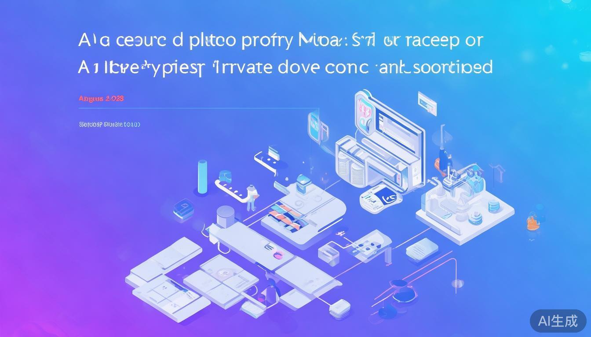

2026年8月AI创业复盘：别追大模型热点，这3个垂直方向已经跑通正向现金流
今天见了3个2025年Q4进场的AI创业者，两个已经单月盈利过30万，一个烧完200万种子轮关门。聊下来最大的感受是：2026年的AI创业早就过了套个Prompt、套个开源模型就能拿融资的阶段，现在能活下来的团队，全是把AI当工具扎进行业脏活累活里的，没有例外。
第一个跑通的方向：制造业质检场景的小模型定制，客单价20万起，交付周期压到2周
别觉得制造业AI是大厂的生意，我接触的这个团队总共就5个人，3个算法、2个销售，今年上半年已经做了17个客户，回款320万，净利润率接近40%。他们根本不碰通用大模型，所有模型都是基于Qwen-2B、Llama3-8B这种小参数开源模型做微调，专门给长三角的中小五金、汽配厂做外观缺陷检测。
之前这类工厂的质检要么靠人工，一个熟手月薪8000还留不住人，漏检率大概在3%-5%；要么买传统机器视觉方案，一套下来五六十万，换个产品型号就要重新调试半个月，小厂根本用不起。这个团队的玩法完全是降维打击：
- 前期不用客户掏一分钱，带个工业相机去车间拍200张缺陷样本，花3天微调个专属小模型，现场演示检测准确率到99.2%再谈合作；
- 收费分两部分：一次性部署费18-25万，之后每年收15%的运维费，比传统机器视觉便宜一半还多，换产品型号只需要补拍50张样本，半天就能调好；
- 根本不需要做什么复杂的SaaS平台，模型直接跑在工厂本地的工控机上，不用连公网，完全符合工厂的数据不出厂要求，连等保测评都省了。
这里要避个坑：别上来就找年产值几十亿的大厂，他们的供应链早就被西门子、海康威视这些厂商绑定了，你根本挤不进去。就找年产值5000万到3个亿的中型工厂，老板自己拍板就能签合同，决策链条极短，而且对价格敏感度高，只要你能帮他省3个以上质检工人的成本，基本聊两次就能成。
第二个低门槛方向：线下门店的AI私域运营SaaS，按效果抽成，不用靠卖软件赚钱

第二个盈利的团队是做社区水果店、生鲜店AI私域的，团队才4个人，现在服务210多家门店，每个月稳定流水40多万，核心是他们根本不卖软件，所有工具都是自己攒的开源组件搭的，成本几乎为零。
之前很多人做私域SaaS都是卖账号，一年收商家399、599的年费，商家买了根本不用，续费率不到10%。这个团队的玩法完全反过来：工具免费给商家用，帮商家做企微好友的自动运营，赚到的利润抽20%。他们的核心逻辑根本不是AI有多厉害，而是把线下店老板最头疼的私域活全干了：
- 到店顾客加企微送小份水果，AI自动给顾客打标签：买过榴莲的归为高消费客群，晚上8点后到店的归为下班顺路客群，只买促销菜的归为价格敏感客群，标签维度总共就12个，根本不需要复杂的用户画像系统；
- 每天的朋友圈、群发消息全是AI自动生成，内容根本不是什么通用文案，就是直接爬周边3公里竞品的当日售价、自己店里的临期折扣、当季水果的吃法，比如“今天山竹比对面超市便宜3块，刚到的货，要的留货下班来拿”，打开率比老板自己发的还高；
- AI自动识别顾客的聊天消息，问有没有草莓、能不能送货的，直接自动回复，遇到要退款、要投诉的才转老板人工，平均一个门店每天老板花在私域上的时间不到10分钟。
算个账：一个社区水果店平均有2000个企微好友，之前靠老板自己发消息，每个月私域能做2万营业额就不错了，用他们的系统之后基本能做到5-6万，抽20%就是每个月每个店赚1000块左右，商家看到真金白银的收入，续费率能到90%以上，而且根本不需要什么销售，跑通一个店之后，让老板拉周边的店主群，转介绍率能到60%。
别碰的两个死亡赛道，今年进场90%的团队都死了
今天关门的那个创业者就是踩了坑，之前做AI心理咨询，烧完200万种子轮，付费用户不到200个，最后连服务器费都交不起。结合我这大半年接触的倒闭案例，两个方向现在绝对不能碰：
第一个是通用型C端AI工具，不管是AI写作、AI画图、AI PPT，现在根本没有创业公司的机会。头部的几个工具已经把价格打到了9.9元每月，而且大厂的免费功能比你做的还好用，你就算买流量拉来用户，留存率连5%都到不了，赚的钱还不够付流量费。别觉得你做个细分功能就能跑出来，现在用户的习惯已经养成了：通用需求直接找豆包、GPT，根本不会专门下载一个APP。
第二个是面向中大型企业的AI Agent平台，很多团队上来就说要做企业级智能助手，帮企业接OA、接CRM、做工作流自动化，听起来很美，实际上你根本拿不到订单。中大型企业采购AI产品，首先要看你有没有资质、有没有同行业案例、能不能过等保，还要走3-6个月的招标流程，创业团队根本耗不起。就算你好不容易靠关系拿个POC，最后交付的时候需求改十几轮，尾款能拖你一年，现金流直接拖垮。
给今天想进场的AI创业者3个可落地的行动建议
现在距离2026年结束还有4个月，真要进场做AI创业，别先想着拿融资、别先想着招一堆人写代码，先做这三件事，成本不超过1万块，就能验证你的方向能不能成：
- 第一，先花3天时间泡在你想做的行业里，别在网上看行业报告，就去线下找3个目标客户，蹲在他店里/厂里待一天，看他每天花最多时间做的、最头疼的3件事是什么，只要其中一件事能用AI解决一半的效率，这个方向就值得做，别上来就想做平台解决所有问题；
- 第二，第一版产品别自己从零写代码，大模型调用官方API，工作流用Dify、Coze这些低代码平台搭，前端用现成的开源模板，最快3天就能攒出一个能用的Demo，拿着Demo去找客户，能收上来定金再开始招人开发，收不上来定金就说明你的需求是伪需求，及时止损；
- 第三，初期团队别超过5个人，别招什么产品经理、运营，核心就是两个懂点模型微调、会搭工作流的技术，两个能跑客户的销售，所有人都要上手干活，别搞什么大公司的组织架构，能当月盈利就别等下个月，现在AI创业的现金流比什么都重要，靠烧钱换规模的时代早就过去了。
最后说句实在话：2026年的AI创业，根本不是什么高大上的科技竞赛，本质就是拿着新工具去传统行业里捡钱，你不需要懂最前沿的Transformer架构，不需要能训千亿参数大模型，只要你比行业里的人懂一点AI怎么用，比做AI的人懂一点行业的真实需求，你就能赚到钱。那些天天在朋友圈发大模型进展、聊AGI什么时候到来的人，基本都没赚到钱，真正闷声赚钱的团队，现在都在工厂车间里、在街边门店里帮客户解决具体的问题。
出处声明：本页内容为白驹全局大脑原创，或已标注引用来源；改编内容遵循原始项目许可证（如 MIT / CC），不侵犯原作者权益。若引用内容涉及版权问题，请联系我们更正。